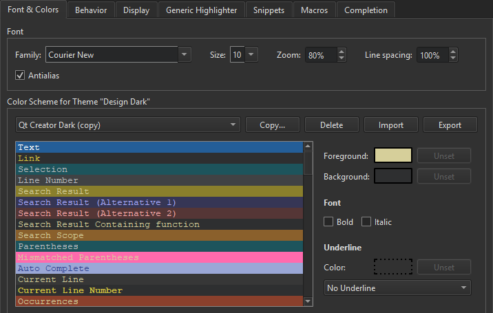

Configuring the Editor
You can configure the text editor to suit your specific needs by selecting Preferences > Text Editor.

The settings you specify apply globally to all projects.
You can also specify indentation settings separately for C++ and QML files either globally or for the open project. For more information, see Indent text or code.
You can perform the following configuration actions:
- Set the font preferences and apply color schemes for syntax highlighting in Font & Colors.
- Specify definition files for syntax highlighting for other types of files than C++ or QML in Generic Highlighter.
- Set tabs, indentation, the handling of whitespace, and mouse operations in Behavior.
- Set various display properties, such as highlighting or folding blocks or text wrapping in Display.
- Add, modify, and remove code snippets in Snippets.
- Configure code completion in Completion.